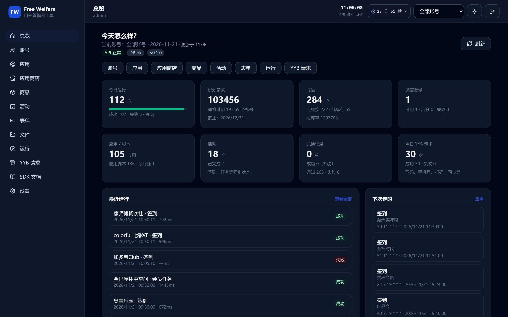
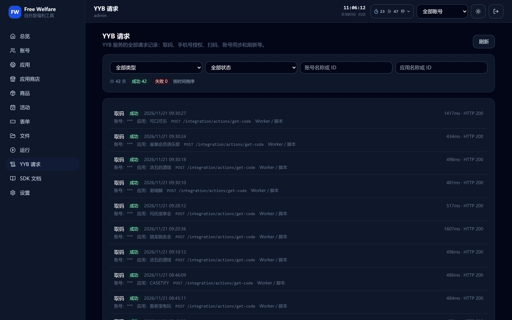
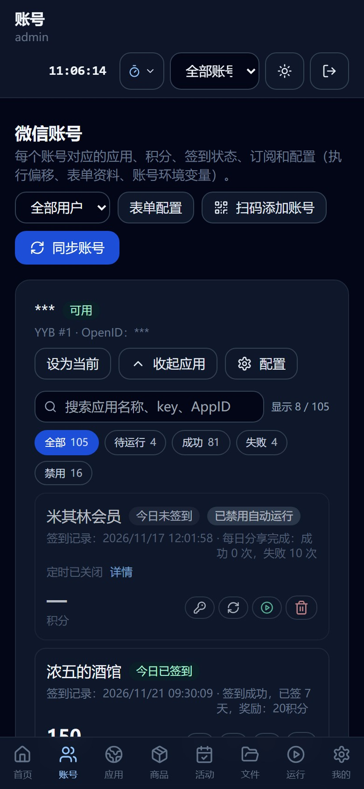

01
多账号与表单
一个微信账号管理多个应用；手机号、生日等表单资料按账号保存，环境变量可以引用表单字段。
功能
不是又一个脚本集合，而是一套能长期运行的账号、任务和日志面板。
一个微信账号管理多个应用；手机号、生日等表单资料按账号保存，环境变量可以引用表单字段。
从脚本源订阅应用和脚本，安装、更新、回滚都有版本记录；官方脚本源已内置 104 个应用。
每个脚本独立 cron，全局并发、单账号、单应用并发限制；队列和运行状态实时刷新。
同步 YYB 微信账号、扫码添加、自动取码和手机号授权；所有 YYB 请求可查询成功率和耗时。
SSE 推送运行状态和日志，任务结束立即更新；支持运行详情、错误码、重跑和完整历史。
PostgreSQL、脚本和缓存全部保存在本机；Docker、Windows 安装包、macOS/Linux 和 NAS 都能部署，不依赖第三方托管。
截图
截图中的账号名称、ID 和手机号已做脱敏处理。




快速开始
Docker Compose、Windows 安装包、macOS/Linux 脚本和 NAS 镜像； 原生方式自带 PostgreSQL，不需要单独安装数据库。YYB 仍需单独部署。
# 1. 克隆
git clone https://github.com/haikuotianko/free-welfare.git
cd free-welfare
# 2. 配置（至少填加密密钥、数据库密码、YYB）
cp deploy/compose/.env.example deploy/compose/.env
# 3. 启动（含 PostgreSQL、API、Worker、Caddy）
docker compose -f deploy/compose/docker-compose.yml up -d --build技术栈